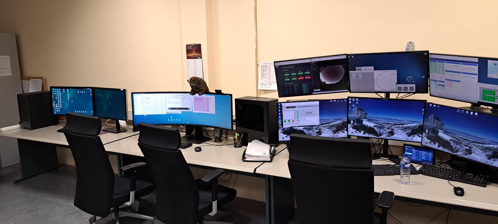
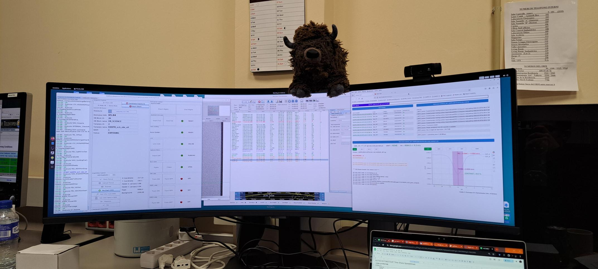
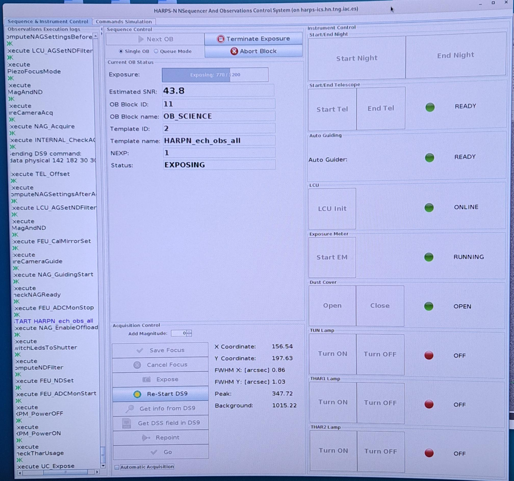
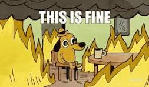
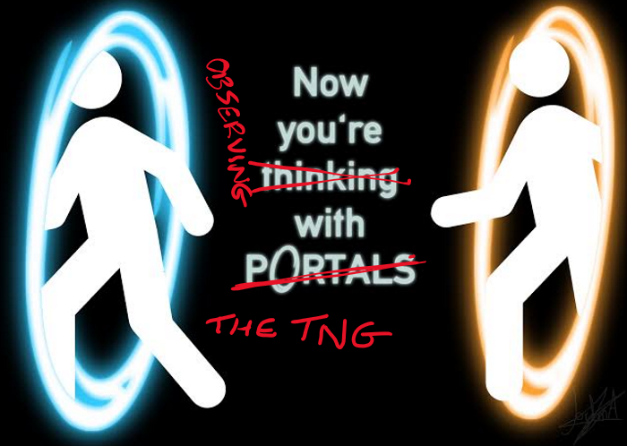

Observing with HARPS-N on the TNG
TNG observing instructions for HARPS & GIARPS
Updated: 22/05/2026
Control room layout
The control room has a basic setup, the astronomer uses three monitors for their work. As you walk in through the door, on your right are the TO's monitors, which are a 3x2 grid of monitors - no touchy. Then, along the desk from that are the astronomer monitors, these consist of a wide curved screen (DRS computer, brunello), then two smaller screens to its left (camera on left & weather on right).

Setup
HARPS-N
First, open the sequencer and scheduler on brunello.
On brunello (DRS computer)
The applications for harps can be found by clicking on the "applications" tab at the top then "HARPS".
- Launch the sequencer
- Launch the scheduler (NSTS)
- Choose "HARPS" & "online"
- If online is working, the scheduler and sequencer will communicate

Next, set up the camera (UCAM).
On the camera monitor
Launch UCAM by clicking the icon on the desktop
In the GUI:
- Click reset
- Accept any pop-up messages by clicking ok
- Click initialise
- Click enable
- Click refresh
- Some channels will come up in "Camera Applications"
- Choose ccd231_read_2ch_app.xml
- Click select
- Click execute
- Check correct values in the Application Parameters window
Remember to turn UCAM off at the end of the night!
Then, launch the DRS.
Run DRS
Open the DRS in Applications --> HARPS-START-DRS 3.2.0
Note: If the browser closes but the terminal remains open, you can click HARPS-START DRS Browser
Now, with permission from the TO, we can begin turning things on.
Start sequencer
- Click LCU init
- Check that the light next to LCU init is green
- Verify that there are no errors reported in the sequencer
- Ask the TO if you can start the telescope
- Click start tel

Congratulations! You are now ready to calibrate!
GIARPS
If using GIANO in GIARPS mode, setup GIANO in a different desktop to HARPS to avoid confusion.
On brunello (DRS computer)
You will open up GIANO exactly the same was as HARPS-N. GIANO has the tabs ordered already.
- Open the sequencer: Applications --> GIANO-B --> 1 GIANO-B Sequencer
- Open the scheduler (NSTS): Applications --> GIANO-B --> 2 GIANO-B NSTS
In the sequencer
- Click start detector
- Make sure that everything in the upper right (instrument & detector) are green
- Make sure the lower right (lamps) are red
- Click set GIARPS
Don't execure set GIANO and start tel at the same time!
DRS
You can open this in the browser, it just sits there working
- Open the DRS: Applications --> GIANO-B --> 3 GIANO-B Online DRS
- Note that it may stall when processing the S1Ds, you can just click stop and then start again
- The S1D DRS is independent of observations and will not affect them
Slit calibration
Open the slit calibrations tab: Applications --> GIANO-B --> 4 GIANO-B Slit Calibration
Congratulations! You are now ready to calibrate!
Calibrations
HARPS-N
First, tell the TO that you are ready to calibrate!
Load calibrations
In the scheduler (NSTS), load the calibrations
- file --> insert OB --> OB_Standard_Calibration
- Make sure the dust cover is closed
Run calibrations
- Turn on the Th-Ar lamps manually (THAR1)
- Check the light is green and "on" is displayed
- Wait a couple minutes for the lamp to warm up
- Click next OB
- Check quality control on DRS
- Turn of THAR1!
Congratulations! You are now ready to observe!
GIARPS
Note: HARPS & GIANO calibrations can be done at the same time
Note: During calibrations, set GIARPS may turn red, this is fine

Afternoon calibrations
Load in calibrations:
- In NSTS, load darks with insert OB --> OB_Cal_Dark
- In NSTS, load flats with insert OB --> OB_Cal_Flat
To be carried out when transit observations are scheduled:
- 7 dark frames to be acquired
For nodding AB observations
- 7 darks with exposure times of 100s
- The standard Dark OB in NSTS can be used as is
- Click next OB to run
- Click start in the DRS S1D bit
For stare observations
- 7 darks with exposure times equal to that of the science observations
- The exposure time in the standard Dark OB must be changed in NSTS
- Click next OB to run
- Click start in the DRS S1D bit
- 7 flat frames with an exposure time of 100s
- Acquired with the Flat OB in NSTS
- Click next OB to run
- Slit calibration using the web interface
- Make sure observations/calibrations have finished and telescope is stopped
- Click start on the interface, it is all automatic
- When it has finished, read out the slit positions to the TO
- Position A/B/C (Result)
- After running these calibrations, load in the target OB and UNe calibration OB to NSTS
Night-time calibrations
- Perform the slit calibration before the start of transit observations (leave significant time - 15 to 20 mins)
- Again, just click start in the tab on the browser
- Perform U-Ne calibration at the end of the GIANO-B observations
- Make sure observations are finished and the telescope is stopped
- Insert the observations in the NSTS insert OB --> OB_Cal_UNe
- Click next OB
- Note: No more GIANO-B observations can be carried out after this exposure
Congratulations! You are now ready to observe!
Observing
HARPS-N
Focus run
In the scheduler (NSTS)...
- Select a bright star and change the _ech_obs_all exposure to HARPN_focus by going to file --> insert TPL
- Change the _ech_acq__wavesimult to _ech_acq_objAB with the same method
In the sequencer...
- Click next OB to slew to the focus star
- Wait for the image to pop-up on DS9 and click on the target so that the green crosshairs are roughly centred on it
- Note: If you focus too early or the target is not yet bright enough, you can wait then click expose to take a new image
- Click go
- Check the FWHM once the exposure is completed, and check the focus with the TO
- If all is well, click save focus
Congratulations! You are ready to science!
Science
- Click next OB and wait for target to pop up on DS9
- Click on the star in DS9
- Note: If the star is far the centre of the crosshairs, re-expose (click expose) and check again. The star is likely to fall in the bottom left quadrant of the crosshairs
- Click go in the sequencer

GIARPS transit observations
Preparing observations
- In the afternoon, ensure corresponding target OB is loaded into GIANO-B & HARPS NSTS
- Set NPAIRS and NEXP in the NSTS to a large number
- Finish any preceding observations at least 10 minutes before the transit (preferably 15 minutes before)
GIARPS mode transit observations
- Click next OB on the HARPS-N NSTS
- Click on the star in DS9 to centre the pointing
- Open a new slit window (Applications --> etc...) and perform the slit calibration
- Click next OB in the GIANO-B NSTS
- Check with the TO that the star is roughly in the centre of the FoV in DS9
- Also check focusing & suitable autoguider exposure time
- Click repoint in the HARPS-N sequencer to recentre the target in DS9
- Start the HARPS-N observations (click go)
- Start the GIANO observations (click go)
- Keep an eye on the progress of exposure frames in the sequencer, and the appearance of the 2D spectra in DS9
- Keep an eye on the S/N evolution in the Online DRS
- Note: If the S1D processing crashes, you can just stop and then restart them
- At the observation end time, click abort on the GIANO-B & HARPS-N sequencers
Make sure calibration lamps are off during observations!
Don't forget to run your U-Ne calibrations after GIANO-B observations!